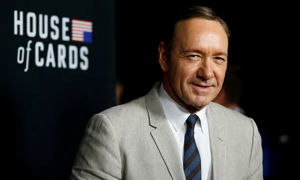

Facebook says 126 million Americans may have seen Russia-linked political posts. Facebook has said as many as 126 million American users may have seen content uploaded by Russia-based operatives over the past two years.
 Netflix cancels House of cards amid Kevin Spacey allegations Netflix has pulled the plug on House of Cards, a day after its lead actor Kevin Spacey was accused of sexually harassing a teenage boy.
Bank of England believes Brexit could cost 75,000 finance jobs. The Bank of England believes that up to 75,000 jobs could be lost within the financial services industry because of Brexit, the BBC reported on Tuesday.